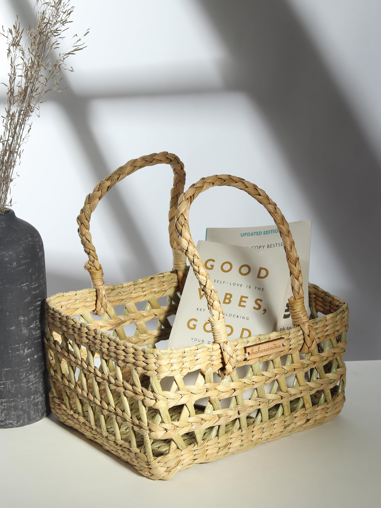

What We Offer

At EcoJute Creations, we are dedicated to providing eco-friendly, stylish, and durable jute products that meet the needs of our diverse clientele. Our range of jute products combines sustainability with aesthetic appeal, ensuring you don’t have to compromise on style to make an environmentally conscious choice.
Here’s what we offer:
Eco-Friendly Bags
- Tote Bags: Perfect for shopping, errands, and casual outings. Available in various designs and sizes to suit your style.
- Grocery Bags: Durable and spacious, our grocery bags are ideal for your weekly shopping trips, helping you reduce plastic use.
- Lunch Bags: Insulated and stylish, our lunch bags keep your food fresh while being kind to the environment.
Home Décor
- Rugs and Carpets: Handcrafted jute rugs and carpets that add a natural touch to your home décor.
- Cushion Covers: Elegant and cozy, our jute cushion covers are perfect for enhancing your living space.
- Storage Baskets: Organize your home with our sturdy and attractive jute storage baskets.
Fashion Accessories
- Handbags: Trendy and practical, our jute handbags are designed to complement any outfit.
- Hats: Stylish jute hats that offer sun protection while adding a chic touch to your wardrobe.
- Belts: Eco-friendly jute belts that are both fashionable and sustainable.
Customized Solutions
- Corporate Gifts: Unique and sustainable jute products tailored for corporate gifting, customized with your company’s branding.
- Special Orders: Whether it’s a wedding, event, or special occasion, we offer custom-made jute products to meet your specific needs.
Commitment to Quality
Our products are crafted with the highest standards of quality and sustainability. We source our jute from ethical suppliers and employ skilled artisans to create products that are not only beautiful but also built to last.
Sustainable Practices
EcoJute Creations is committed to promoting a greener planet. Our manufacturing processes are designed to minimize environmental impact, and we continuously strive to innovate and adopt more sustainable practices.
Explore
Explore our range of jute products and join us in making a positive impact on the environment, one product at a time.
Visit
Visit our
Shop to start your eco-friendly journey with EcoJute Creations today!